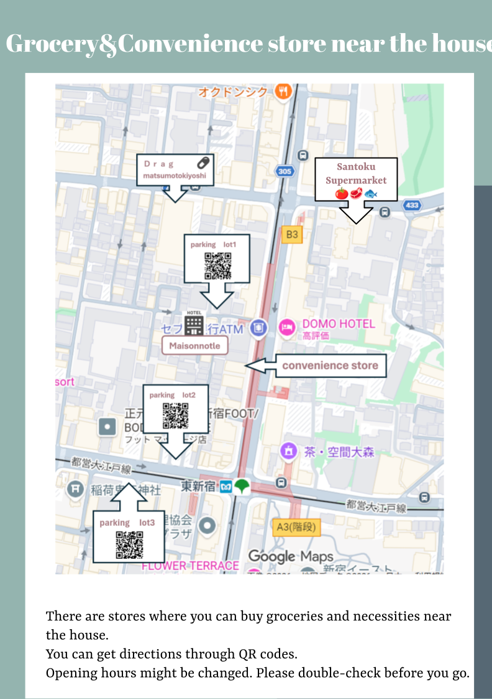

Nearby Shops
- 🏪 Convenience store — 24h (1 min walk)
- 🛒 Mini grocery store — 7:00 AM – Midnight (1 min walk)
- 💊 Pharmacy — Mon–Fri 8AM–10PM / Sat–Sun 10AM–10PM (4 min walk)
※ Opening hours may change. Please check before you go.
🍴 Recommended Restaurants
We hope you're enjoying your stay! Here are some of our local restaurant recommendations nearby. All spots are real and easy to find on Google Maps!
🍜 創作麺工房 鳴龍 (Nakiryu)
A Michelin Bib Gourmand ramen shop famous for its rich dan dan noodles.
🍜 らぁめん子うさぎ (Ko-usagi)
A cozy local ramen shop loved by residents. Well-balanced and approachable.
🍣 天下寿司 東新宿エリア (Tenka Sushi)
A casual conveyor belt sushi spot right near Higashi-Shinjuku Station. Great for first-time visitors to Japan.
🍶 新大久保・大久保エリアの飲食店街 (Higashi-Shinjuku Norengai)
A lively alley packed with small restaurants and bars — perfect for exploring.
☕ eightdays dining
A stylish café with great coffee and desserts.
🥩 東京苑 東新宿エリア (Tokyo-en)
High-quality Japanese BBQ (yakiniku) popular with locals.
🍺 Smoke Beer Factory Higashi-Shinjuku
A craft beer bar serving smoked food — a great spot for a relaxed evening.